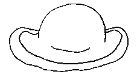
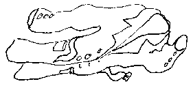

|
en aver pliein les braies |
to have enough on one's plate |
|
monter dans les braies d'eune femme |
to get hitched |
|
aver un bouan tchu à ses braies |
to be comfortably off |

|
haler san chapé |
to doff one's hat |
|
nièr coumme du chapé |
black as my hat |
|
l'bonnet d'âne |
dunce's cap |
|
en aver pliein les cauches |
to have enough on one's plate |
|
eune cauche dé Noué |
Christmas stocking |
|
i' b'thait ses cauches |
he'd drink himself into the gutter |
|
caûchi dans l'même soulier |
to get along |
|
nou n'en peut faithe ni cauche ni bonnet |
not to be able to decide |
|
pliein coumme eune cauche |
full |
|
caûchi dans l'même bonnet |
to get along |
|
êt' touos souos un même bonnet |
to be in the same boat |
|
aver tête et bonnet |
to be stubborn |
|
aver l'ouothelle près du bonnet |
to be hot-tempered |
|
triste coumme un bonnet d'niet |
sad |

|
en manches dé c'mînse |
in shirt sleeves |
|
jé n'voudrais pon êt' dans sa c'mînse |
I wouldn't want to be in his shoes |
|
donner sa c'mînse |
to give the shirt off one's back |
|
i' n'y'a coumme sé sa c'mînse à laver |
if you want a job done properly do it yourself |
|
la c'mînse est la préchaine du dos |
blood is thicker than water |
|
i' n'est qu'sa c'mînse laver |
as simple as that |
|
n'en aver pus d'peux qué d'sa preunmié c'mînse |
not to be scared at all |
|
ch'est eune aut' pathe de manches |
that's a different kettle of fish |

|
touônner câsaque |
to turn coat |

|
êt' coumme la main et l'gant |
to be hand in glove |
|
v'là tchi m'va coumme un gant |
it fits like a glove |
|
ordgilleu coumme un poux sus l'gant d'la Reine |
as proud as Punch |
|
sèrclier sans ses mitaines |
to daydream |
Femme dé bouanne maîson a la c'mînse pus longue qué l'côtillon
I' n'faut pon chouaîsi fil'ye par sa robe dé souaie
Ch'n'est pon l'habit tchi fait l'mouaine
Les cordonnièrs sont les piéthes caûchis
Viyiz étout: